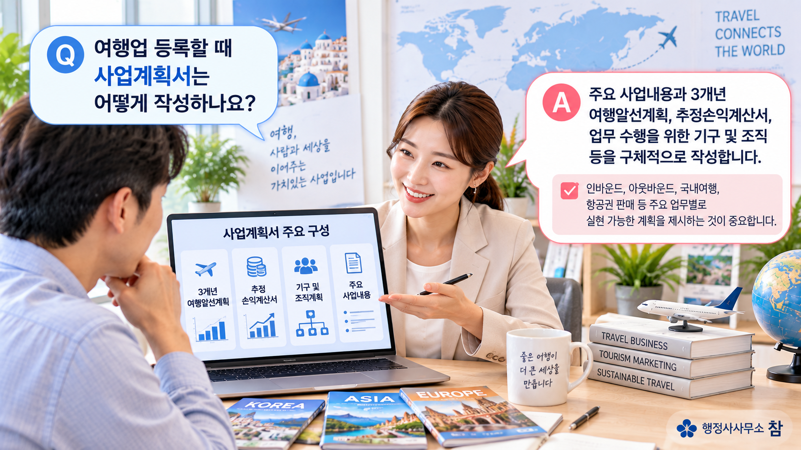

① 어떤 여행업으로 등록해야 할까요?
여행업은 영업범위에 따라 종합여행업, 국내외여행업, 국내여행업으로 구분됩니다. 따라서 누구를 대상으로 어느 지역의 여행상품을 취급할 것인지 먼저 정해야 합니다.
- 종합여행업 : 국내외를 여행하는 내국인 및 외국인을 대상으로 하는 여행업
- 국내외여행업 : 국내외를 여행하는 내국인을 대상으로 하는 여행업
- 국내여행업 : 국내를 여행하는 내국인을 대상으로 하는 여행업
② 자본금과 사무실 요건은?
일반 지역의 여행업 등록기준은 다음과 같습니다. 개인사업자는 자본금 대신 자산평가액을 기준으로 하며, 모든 여행업은 사무실에 대한 소유권 또는 사용권이 있어야 합니다.
| 여행업 종류 | 일반 지역 자본금 기준 | 사무실 |
|---|---|---|
| 종합여행업 | 5,000만원 이상 | 소유권 또는 사용권 |
| 국내외여행업 | 3,000만원 이상 | 소유권 또는 사용권 |
| 국내여행업 | 1,500만원 이상 | 소유권 또는 사용권 |
※ 국내여행업의 한시적 750만원 기준은 2026.6.30. 종료되었습니다.
제주특별자치도는 자본금 기준이 다릅니다
| 여행업 종류 | 제주특별자치도 기준 |
|---|---|
| 종합여행업 | 3억 5,000만원 이상 |
| 국내외여행업 | 1억원 이상 |
| 국내여행업 | 5,000만원 이상 |
개인의 경우에는 자산평가액을 기준으로 하며, 사무실은 소유권이나 사용권이 있어야 합니다.
③ 사무실은 어떻게 준비해야 할까요?
여행업 등록기준상 사무실은 소유권이나 사용권이 있어야 합니다. 임차한 경우라면 실제 해당 장소를 여행업 사무실로 사용할 수 있는지 확인하고, 신청 과정에서 사용권을 확인할 수 있도록 관련 서류를 준비하는 것이 중요합니다.
④ 여행업 등록에는 어떤 서류가 필요할까요?
관광사업 등록신청서와 함께 사업계획서 등을 제출합니다. 신청인이 개인인지 법인인지, 내국인인지 외국인인지 등에 따라 추가 확인서류가 달라질 수 있습니다.
따라서 실제 신청 전에는 관할 시·군·구청의 안내사항과 신청인의 상황을 함께 확인하는 것이 좋습니다.
⑤ 사업계획서에는 무엇을 작성할까요?
시·군·구청에서 안내하는 여행업 사업계획서 포맷을 기준으로 보면 주요 내용은 다음과 같이 구성됩니다.
- 개요
- 주요 사업내용
- 향후 3년간 여행알선계획
- 향후 3년간 추정손익계산서
- 알선업무 수행을 위한 기구 및 조직
3개년 여행알선계획
여행알선계획은 인바운드·아웃바운드·국내여행·항공권 판매 등을 구분하고, 각각 1차년도·2차년도·3차년도 및 지역별·국가별 계획을 구체화하여 작성합니다.
앞뒤가 맞는 사업계획이 중요합니다
여행알선계획 → 예상 매출 → 추정손익 → 인력·조직이 서로 연결되어야 합니다. 예를 들어 3차년도 알선 규모가 크게 증가한다면 예상 매출과 비용, 이를 수행할 조직계획도 함께 맞아야 사업계획서 전체의 일관성이 유지됩니다.

⑥ 여행업 등록은 어떤 절차로 진행될까요?
실무상 준비 흐름은 다음과 같이 이해하면 쉽습니다.
여행업 등록신청의 법정 처리기간은 신청서 서식상 7일로 안내되어 있습니다. 다만 보완이나 확인이 필요한 경우 실제 처리과정은 달라질 수 있습니다.
또한 사업장 현장확인은 모든 여행업 등록에서 반드시 실시되는 일률적인 단계라고 단정하기보다, 관할 관청의 처리방식이나 확인 필요성에 따라 이루어질 수 있는 절차로 이해하는 것이 적절합니다.
⑦ 등록 준비에서 특히 확인할 사항
- 실제 영업범위에 맞는 여행업 종류를 선택했는가
- 자본금 또는 자산평가액 기준을 충족하는가
- 사무실의 소유권 또는 사용권을 확보했는가
- 3개년 여행알선계획과 추정손익이 서로 연결되는가
- 사업계획을 수행할 수 있는 기구와 조직을 구성했는가
- 제주특별자치도라면 별도의 등록기준을 적용했는가
여행업 등록요건을 먼저 확인해 보세요
자가진단으로 주요 요건을 확인하거나 구체적인 상황을 알려주시면 상담을 통해 필요한 절차를 살펴드립니다.